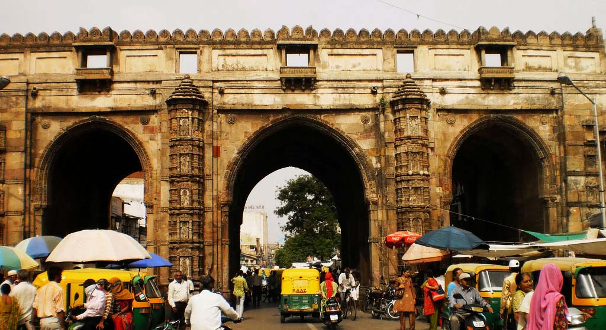
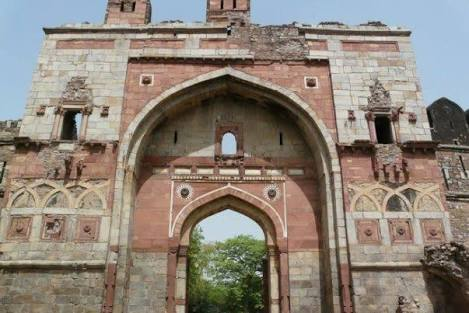
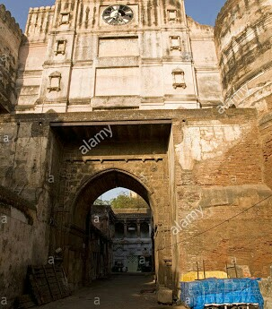
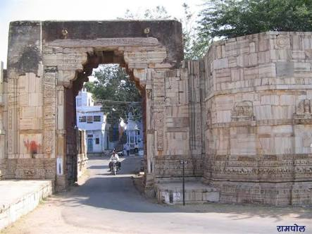
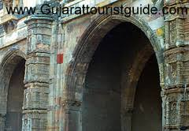
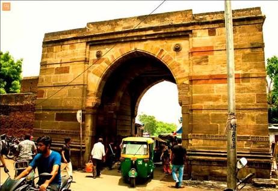
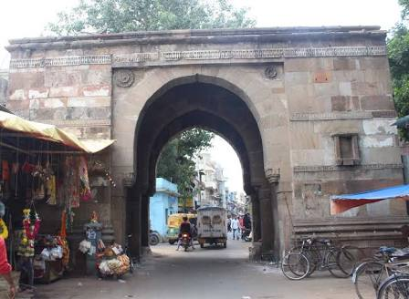
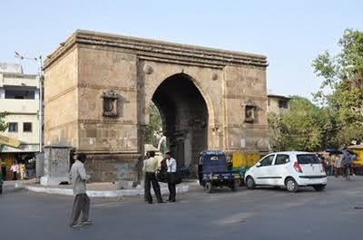

Bhadra Fort is situated in the walled city area of Ahmedabad, India. It was built by Ahmad Shah I in 1411. With its well carved royal palaces, mosques, gates and open spaces, it was renovated in 2014 by Ahmedabad Municipal Corporation (AMC) and Archaeological Survey of India (ASI) as a cultural centre for the city.
- Bhadra gate

- Teen Darwaja
- Lal Darwaja
- Ganesh Gate
- Ram Gate
 - Teen Darwaja
|
|
As the city expanded, the second fort was built by Ahmed Shah I as described in Mirat-i- Ahmadi . It was further fortified by Mahmud Begadain 1489.
- Shahpur Darwaja
- Delhi Darwaja

- Dariyapur Darwaja

- Prem Darwaja

- Panchkua Darwaja

- Delhi Darwaja
- Kalupur Darwaja
- Sarangpur Darwaja
- Raipur Darwaja

- Aastodia Darwaja

- Jamalpur Darwaja
 - Sarangpur Darwaja
|
|
|
|